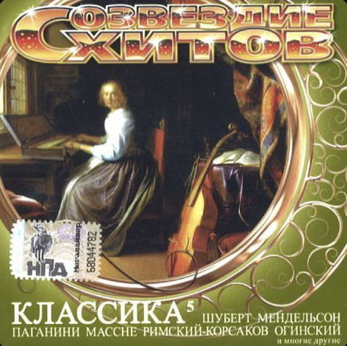

▶ Слушать в Spotify
Название: Chopin: Nocturne No. 20 in C-Sharp Minor
Автор: Frederic Chopin
Название: Elegy In Commemoration of A.Khachaturyan
Автор: Arno Babadjanian

Название: Щелкунчик. Вальс цветов
Автор: Петр Ильич Чайковский
↑ К началу